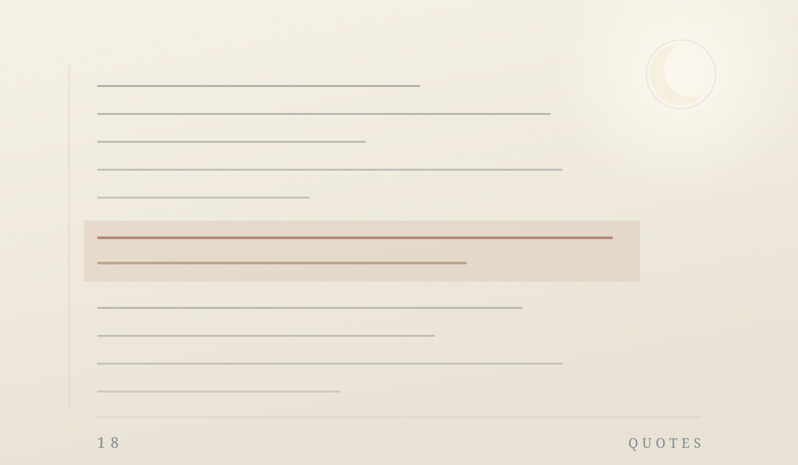

Room 01 · Sentences
Be patient toward all that is unsolved in your heart and try to love the questions themselves.

All
Eighteen lines
No need to finish them in one sitting. When a line lands, stop there.
-
01
Be patient toward all that is unsolved in your heart and try to love the questions themselves.
-
02
Who looks outside, dreams; who looks inside, awakes.
-
03
In the depth of winter, I finally learned that within me there lay an invincible summer.
-
04
A woman must have money and a room of her own if she is to write fiction.
-
05
Tell me, what is it you plan to do with your one wild and precious life?
-
06
I am in no hurry: I have nothing I must become.
-
07
You do not need to leave your room. Remain sitting at your table and listen.
-
08
Attention is the rarest and the purest form of generosity.
-
09
I have always imagined that Paradise will be a kind of library.
-
10
What is essential is invisible to the eye.
-
11
The world has kissed my soul with its pain, asking for its return in songs.
-
12
I am one who snows endlessly in the dark.
-
13
Because I have loved, I am compassionate; because I understand, I forgive.
-
14
Almost everything will work again if you unplug it for a few minutes — including you.
-
15
Breathing in, I know that I am alive; breathing out, I smile to this moment.
-
16
Each person's life is a road that leads toward oneself.
-
17
"Hope" is the thing with feathers — that perches in the soul.
-
18
This dewdrop world — is a dewdrop world — and yet, and yet.
All quotes are in the public domain or widely circulated translations, shared here for reading only.